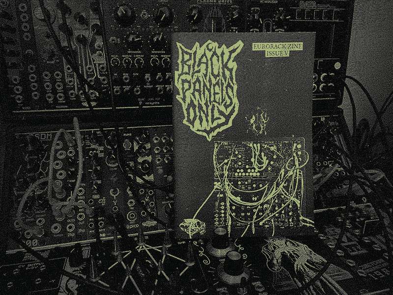
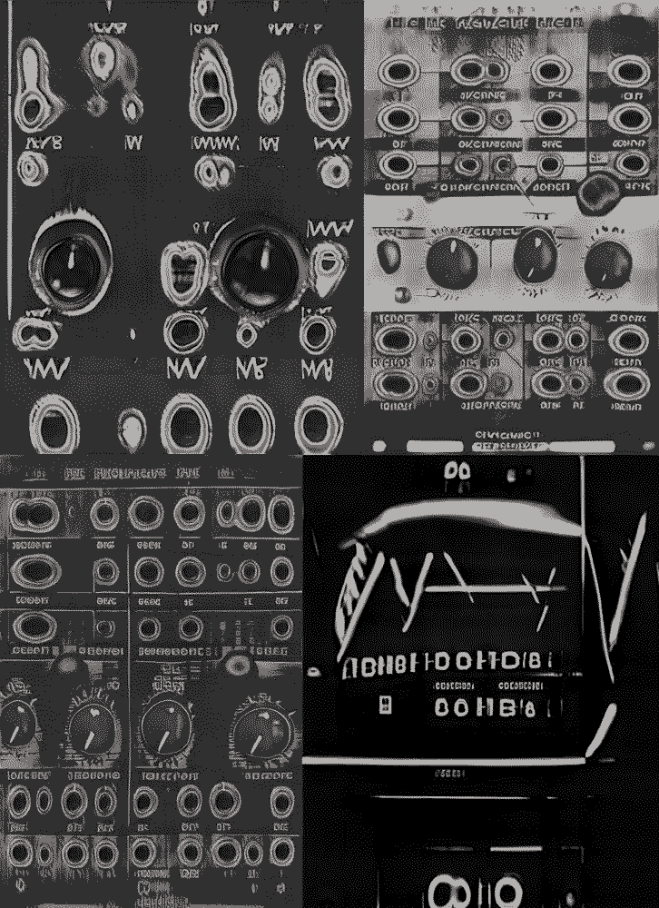

Issue V

This one had a loose Dungeons & Dragons RPG kinda theme. I’d never played any RPGs but i’d recently picked up the book for the rules-light grimdark metal-themed game Mörk Borg, mainly out of curiosity and because the graphic design of it is just incredible. I was also interested in the way old school RPGs use dice-tables to generate random events so I felt there was a bit of a connection with modular there. James Cigler, creator of the PatchTCG modular synth card game, was up for being interviewed and so was UK composer OGRE, who had created a D&D-inspired Synth & Sorcery album series, which nicely tied the theme together.
I was excited to have Winterbloom in the zine as, apart from the fact they're putting out some super cool modules, the contrast of their whimsical panel designs to the rest of BPO felt like a rest point during a game, where you'd have a brief respite in like a town to reheal or something. Also they place a big focus on education- everything is open source and available as kits and they have super in-depth manuals promoting DIY and encouraging people to have a go things like coding which is awesome.
I came across Friedensreich26's uncanny, creepy, machine learning-generated module designs on Instagram and they were kind enough to generate some specially for the zine which again seemed to fit the theme. Even the module names are machine-learning generated. Here are a few more that weren't in the zine:
Top row: DC 2180 Voltage Chord Generator and the Meliskell Dual Quantizer
Bottom row: XLT STMicro and the Neutron Combustion Carrier

I'd been wanting to include Tendrils for a while because I really think they're the best patch cables out there. I think most people are familiar with the right-angled cables which are great for saving space on stuff that stays patched but their straight cables are where it's at for me, they're so low profile that you can just always see what you're doing, just a pleasure to use.
The cover image for this issue is a mini case belonging to Korvapuusti who went above and beyond and took some amazing, super hi-res photos for me- it’s almost a shame that I intentionally decimated the quality for the zine but I think the cover came out great.
Released 27th August 2021.
Features:
- Sarah Belle Reid
- OGRE (Robin Ogden)
- Winterbloom
- Tendrils
- James Cigler/Patch TCG
- Arcaico
- Interface Design by Roey Tsemah
- My Rack - Snakes of Russia
- AI Modules by Friedensreich26
- Patch Generator
- Module Review: Sacrament Modular The Cursible
- Rack Photos: Korvapuusti, Tarek Sabbar